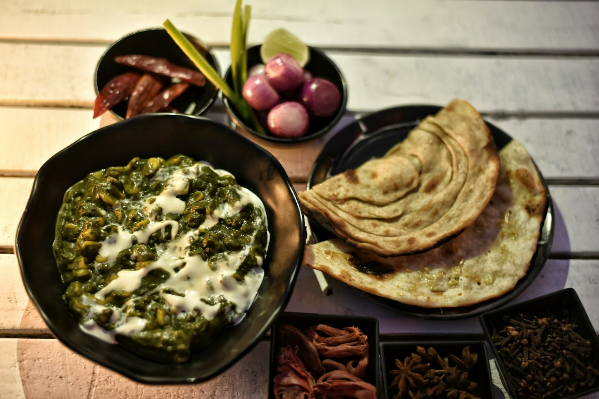

Saag Chicken
A high-protein take on saag built in one Dutch oven. Marinated chicken gets browned, then the fond becomes the base for onions, ginger, garlic and Indian spices. A full pound of spinach wilts down with broth, then blended cottage cheese gets stick-blended right into the greens for a creamy, protein-loaded sauce — no heavy cream base needed. Holds for days and the macros are excellent.
Indian · High Protein · Dinner · Meal Prep

275kcal
43gprotein
Makes 3 servings. Whole batch: 825 kcal, 130g protein.
Ingredients
Steps
- Brown the marinated chicken in a Dutch oven until it has good color and char in spots. Remove and set aside.
- In the fond left behind, cook the onions with a little salt until softened and golden.
- Add ginger, garlic, and Indian spices; cook until fragrant, ~2 min.
- Add the full pound of spinach and the chicken broth. Close the lid and let it steam and wilt down.
- Add the blended cottage cheese (and bone broth powder if using). Use a stick blender to blend everything together and crush the spinach into a smooth saag.
- Add the browned chicken back in. Salt to taste.
- Finish with a drizzle of cream (~1 tsp) and crushed kasuri methi on top.
- Serve over rice, with naan, or with paratha.
The cottage cheese blended directly into the wilted spinach is the move — it adds body and a big protein boost without the calories of a cream-heavy saag. The fond from browning the chicken is where a lot of the flavor lives, so build the onion base right in it. Full pot runs roughly ~805-850 cal / ~125-135g protein (sauce + chicken, before rice/naan). Makes 3 servings and holds well for 2-3 days. A scoop of bone broth powder pushes the protein even higher. Don't skip the kasuri methi finish — it's what makes it taste authentically saag.